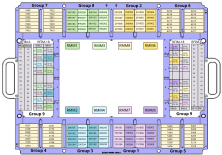

WSMM Card Cage DUT Interface
The DUT interface of the WSMM solution features four groups of WSMM RF ports, resources of the DUT Scale interface in four groups of pogo blocks, and direct access to RFIM-6/RFIM-8 and RFIM-18 ports of the Wave Scale RF card.
Compared to the DUT scale interface, the pogo block groups and RF ports are shifted outwards providing more application space in the center of the board.

For a table with the internal RF‑related routing of two RFIM‑18 modules and two optional RFIM‑6/8 modules, refer to section RFIM-6/8 / RFIM-18 (E8027BRA) channel transformation in WSMM Card Cage RFIM18 / RFIM6 channel transformation.
| Group | Usage |
|---|---|
| 1, 2, 3, 8 |
RF ports of the Remote Mixing Modules (RMM) 1 to 8. For more information, refer to Wave Scale RF with RMM hardware overview. |
| 4, 5, 6, 7 | Resources of the DUT Scale interface, routed by the WSMM Card Cage Family board. |
| 9 |
RFIM-6/RFIM-8 and RFIM-18 ports of the Wave Scale RF card. The available ports are marked grey in the graphics above. The color-coded ports are internally connected to the RMMs of groups 1, 2, 3 and 8. |
Pogo blocks and RF ports
The following table shows all available pogo blocks and RF ports of the WSMM Card Cage DUT interface.
| Group | Pogo block and RF port range | Usage |
|---|---|---|
| 4 | 4128, 4129, 4130, 4132, 4133, 4134 | Resources of the DUT Scale interface. For the assignment from pogo blocks of the DUT scale interface to the pogo blocks of the WSMM Card Cage DUT interface, refer to WSMM Family Board E8027FAA pogo block mapping. |
| 4327, 4328, 4329, 4330, 4331, 4332, 4333, 4334 | ||
| 5 | 5204, 5205, 5206, 5208, 5209, 5210 | |
| 5403, 5404, 5405, 5406, 5407, 5408, 5409, 5410 | ||
| 6 | 6212, 6213, 6214, 6216, 6217, 6218 | |
| 6411, 6412, 6413, 6414, 6415, 6416, 6417, 6418 | ||
| 7 | 7220, 7221, 7222, 7224, 7225, 7226 | |
| 7419, 7420, 7421, 7422, 7423, 7424, 7425, 7426 | ||
| 9 | 9901, 9902, 9903, 9904 | RFIM-6/RFIM-8 and RFIM-18 ports of the left side |
| 9 | 9909, 9910, 9911, 9912 | RFIM-6/RFIM-8 and RFIM-18 ports of the right side |
| 1 | 190901, 190902, 190903, 190904, 190905, 190906, 190907, 190908 | RF ports of RMM 5 |
| 1 | 191001, 191002, 191003, 191004, 191005, 191006, 191007, 191008 | RF ports of RMM 7 |
| 2 | 290901, 290902, 290903, 290904, 290905, 290906, 290907, 290908 | RF ports of RMM 6 |
| 2 | 291001, 291002, 291003, 291004, 291005, 291006, 291007, 291008 | RF ports of RMM 8 |
| 3 | 390101, 390102, 390103, 390104, 390105, 390106, 390107, 390108 | RF ports of RMM 2 |
| 3 | 390201, 390202, 390203, 390204, 390205, 390206, 390207, 390208 | RF ports of RMM 4 |
| 8 | 890101, 890102, 890103, 890104, 890105, 890106, 890107, 890108 | RF ports of RMM 1 |
| 8 | 890201, 890202, 890203, 890204, 890205, 890206, 890207, 890208 | RF ports of RMM 3 |
Virtual pogo blocks
SmarTest divides physical pogo blocks of more than 16 channels into 16 channel units called logical boards. The first logical board is assigned to the physical pogo block. The other logical boards are assigned to so-called virtual pogo blocks.
| Group | Pogo block and RF port range | Usage |
|---|---|---|
| 4 | 4528, 4529, 4530, 4532, 4533, 4534 | These virtual blocks are used for physical pogo blocks providing more than 16 channels and therefore covering minimum two logical boards. An offset of 400 is to be added to the position of the physical block to obtain the number of the virtual pogo block. |
| 4727, 4728, 4729, 4730, 4731, 4732, 4733, 4734 | ||
| 5 | 5604, 5605, 5606, 5608, 5609, 5610 | |
| 5803, 5804, 5805, 5806, 5807, 5808, 5809, 5810 | ||
| 6 | 6612, 6613, 6614, 6616, 6617, 6618 | |
| 6811, 6812, 6813, 6814, 6815, 6816, 6817, 6818 | ||
| 7 | 7620, 7621, 7622, 7624, 7625, 7626 | |
| 7819, 7820, 7821, 7822, 7823, 7824, 7825, 7826 |
For the WSMM Family Board E8027FAA, virtual pogo blocks shown an offset of 400 in the "WSMM logical pin" column compared to the "WSMM block" column of the table in WSMM Family Board E8027FAA pogo pin mapping.
For more information, see also section Model file declaration in Wave Scale Millimeter specific setup tasks.
Functional changes
- Introduced in SmarTest 8.2.5